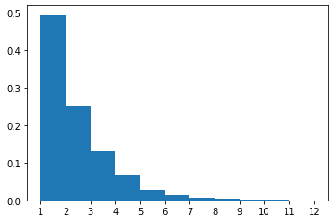

Formal semantics
Contents
!pip3 install ColabTurtlePlus
Collecting ColabTurtlePlus
Downloading ColabTurtlePlus-2.0.1-py3-none-any.whl (31 kB)
Installing collected packages: ColabTurtlePlus
Successfully installed ColabTurtlePlus-2.0.1
from numpy.random import choice
import numpy as np
import matplotlib.pyplot as plt
import re
from ColabTurtlePlus import Turtle as t
Formal semantics¶
def normalize(arr):
return arr / np.sum(arr)
def apply_rule(match, grammar):
probs, subs = zip(*grammar[match.group(0)])
sub = choice(subs, p=normalize(probs))
return sub
Basic arithmetic as a CFG¶
We will use \(\lambda\) expressions to encode the meaning of our operators. Thankfully this is made quite easy by Python’s lambda syntax, which we have seen a couple of weeks ago.
# Let's define some meanings!
plusOne = lambda x: x+1
one = 1
plusOne(plusOne(one))
3
Python’s eval function plays the role of the interpretation function which we discussed in class.
eval('plusOne(plusOne(one))')
3
CFG_arithmetic = {
'<S>': ['plusOne(<S>)', 'one']
}
tuple
def complete(sentence, grammar):
while '<' in sentence:
sentence = re.sub(
'<(.*?)>',
lambda match: apply_rule(match, grammar),
sentence
)
return sentence
generate_random_sentences(CFG_arithmetic, 1)
['plusOne(plusOne(plusOne(plusOne(plusOne(plusOne(one))))))']
# plot distribution of numbers obtained with this grammar
numbers = [eval(i) for i in generate_random_sentences(CFG_arithmetic, 10000)]
Note that the frequency of \(n\) is \(2^{-n}\). Can you tell why?
plt.hist(numbers, density=True, bins=np.arange(1,13))
plt.xticks(np.arange(1, 13))
plt.show()

A grammar for shapes¶
Instead of defining meanings ourselves, we can rely on already existing libraries, even if they were not meant to be used with a CFG. For instance, consider Python’s ‘turtle’ library.
grammar = {
'<drawing>': [
(8, '<movement><drawing>'),
(1, '\tpass'),
# (1, '\tt.home()')
],
'<movement>': [
(1, '\tt.forward(<distance>) \n'),
(1, '\tt.backward(<distance>) \n'),
(1, '\tt.right(<angle>) \n'),
(1, '\tt.left(<angle>) \n'),
# (0.5, '\tt.face(<angle>) \n'),
(1, '\tt.circle(<distance>,<angle>) \n')
],
'<distance>': [
(1, '10'),
(1, '20'),
(1, '30'),
],
'<angle>': [
(1, '30'),
(1, '60'),
(1, '90'),
(1, '170')
]
}
instructions = complete('<drawing>', grammar)
program = f"""
t.clearscreen()
t.initializeTurtle()
t.hideturtle()
t.color('black')
t.speed(13)
for i in range(20):
{instructions}
if -10 > t.getx() > 10:
t.home()
"""
exec(program)